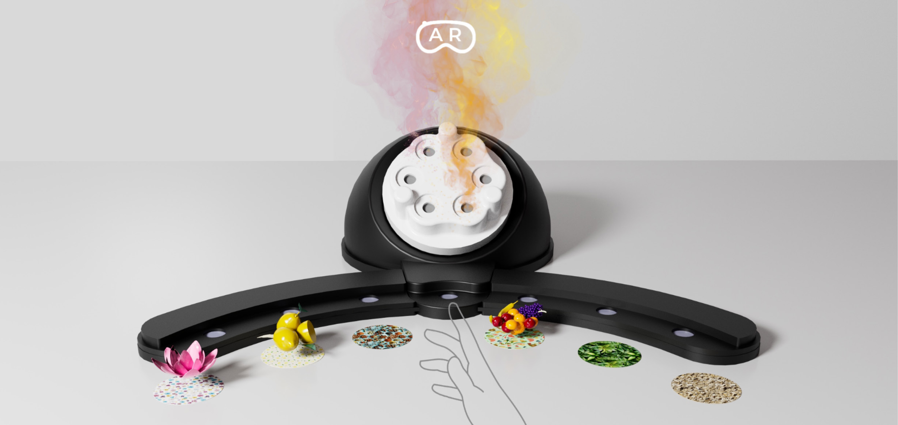
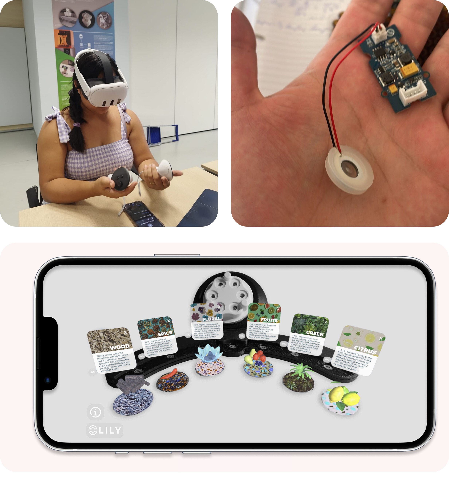

LILY
Virtiual and Physical AR experience

OVERVIEW
During the 'Virtual and Physical Prototyping' course at @PoliMI, my team and I created an olfactive display system prototype.
This system, enhanced with an AR experience developed in Unity using the @MetaQuest3, aims to deeply immerse users in the role of a perfumer. It provides them with comprehensive knowledge of fragrances, enabling them to experiment and test various perfume mixtures.
Goal
Design an AR experience connected with an Olfative display system prototype
My Role
Developing an AR interface with Unity, UX research, UI, 3D modeler
Design focus
AR experience, UX, UI, Hardware, Product
Timeline
2 months
OUR APPROACH
- Exploring through User Research & Literature Review VR/metaverse fragrance applications and market trends
- Identified key insights to develop a new fragrance experience
- Mapped the user journey and designed the AR interface for the physical product
- Proposed an UX-focused enhancements for seamless connection between physical and virtual prototypes
- Developed the physical product, including its hardware
- Designed all the 3D models and AR assets
- Built the AR application in Unity for mobile and VR headsets

AR-Enhanced Fragrance Experience
This project defined user interactions for an educational AR experience, complementing an olfactory display with rich visual and informative content. You selected six fragrances, preparing corresponding 3D models and images for import into Unity via Vuforia. Crucially, you then scaled, positioned,
animated, and colored these 3D models while setting up printed image targets for AR recognition. Objects, canvases, and buttons were precisely positioned on these Image Targets, with a custom script ensuring full functionality. Finally, the entire Unity project was exported to Android, featuring
fully opaque graphics for optimal visibility and clear information delivery.